基金评价
基金评价
云通基金研究智库对现有的基金评级方法进行了全面、深入地研究和剖析。在广泛借鉴国内外基金评级方法的基础上，私募云通悉心研发出一套可以进行闭环检验的私募证券基金评价系统，力求进行独立、客观、专业的基金评价，科学地评估私募证券基金的业绩表现，进而推动基金行业的健康发展。
评价CMVR原则
可比较
(Comparable)
可测量
(Measurable)
可检测
(Verifiable)
可重复
(Repeatable)
评价特色
-
 充分兼顾基金评级的持续性和灵敏性两方面要求。科学切分样本，循环滚动训练集与测试集，不断优化，得到最优参数和综合评级的权重，力求更加准确的基金评级结果。
充分兼顾基金评级的持续性和灵敏性两方面要求。科学切分样本，循环滚动训练集与测试集，不断优化，得到最优参数和综合评级的权重，力求更加准确的基金评级结果。
-
对风险调整参数γ与综合评级权重w进行不同时间长度和不同滚动方式（平滑滚动和外推滚动）训练，将基金业绩的可预测性作为训练评级参数的一个重要考量因素。
-
通过优化，我们解决了以往私募基金评级中出现的评级参数和权重的主观选择问题。同时，私募云通基于机器学习的方法，实现了智能化基金评级，实现闭环检验。
三大模型性能评价准则
-
评级转移矩阵准则，包括：主队角站优度、次对角占优度和高星级转移度。
-
高星级基金评级转移矩阵。
-
损失函数准则包括：均方误差(MSE)、均方根误差(RMSE)和绝对平均误差(MAE)。
评级流程
